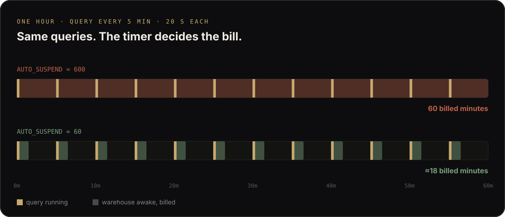
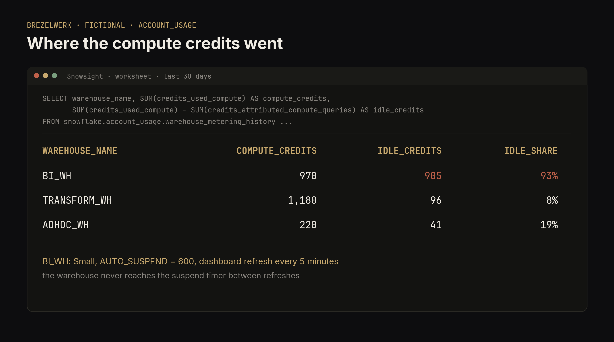
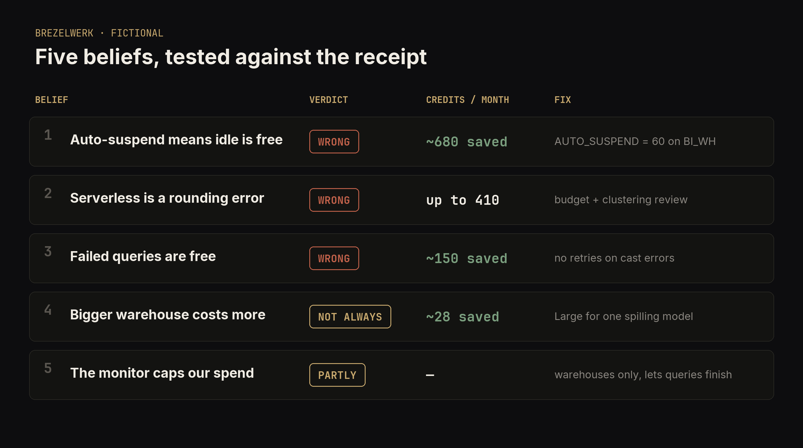

A Snowflake warehouse that runs one 20-second query every five minutes never goes to sleep. With the default auto-suspend of 600 seconds, the next query always arrives before the timer runs out, so you pay for every minute of the day the dashboard is open.
Nobody on the team believes they're paying for that. They believe the resource monitor caps the bill and auto-suspend handles the rest.
- Most Snowflake cost advice is sizing folklore nobody has measured.
- The biggest leaks sit where your resource monitor can't see.
- Four ACCOUNT_USAGE queries turn opinions into a ranked fix list.
Brezelwerk is a fictional Munich bakery chain, and its numbers are illustrative. The queries use documented SNOWFLAKE.ACCOUNT_USAGE views and columns; I checked them against the docs, not on a live account.
The bill jumped, and everyone had a theory
Brezelwerk's monthly Snowflake usage went from about 1,950 credits to 2,950 after the ops team got a store dashboard that refreshes every five minutes. In the meeting, five beliefs came up:
- "Our resource monitor caps spend at 2,500, so that can't be right."
- "Auto-suspend is on, so idle warehouses cost nothing."
- "A bigger warehouse costs more."
- "Failed queries are free, they didn't produce anything."
- "Serverless features are a rounding error."
Each one is testable. Snowflake records where every credit went in the ACCOUNT_USAGE schema: a shared database every account has, with a year of history and a delay of up to a few hours. Think of it as the itemised receipt, where your monthly invoice is just the total at the bottom.
Beliefs 1 and 5: the monitor sees warehouses, nothing else
The docs are blunt: "Resource monitors work for warehouses only." Automatic clustering, search optimization, Snowpipe, serverless tasks, materialized view refreshes and AI services all bill outside any monitor.
Even for warehouses, a monitor is a smoke alarm, not a circuit breaker. The SUSPEND action "waits for currently executing queries to finish", so credits keep flowing after the quota is hit, and Snowflake suggests triggering at 90% instead of 100% to leave a buffer.
This query shows the whole receipt, grouped by service:
SELECT
service_type
, SUM(credits_billed) AS credits
FROM snowflake.account_usage.metering_daily_history
WHERE usage_date >= DATEADD('day', -30, CURRENT_DATE())
GROUP BY service_type
ORDER BY credits DESC;
At Brezelwerk, AUTO_CLUSTERING (260 credits) and SEARCH_OPTIMIZATION (150) never showed up on the monitor. For spend outside warehouses, create a budget: budgets cover serverless and AI services, though they only alert and never stop anything. Then check whether that clustering key still earns its credits (my clustering guide has the test).
Belief 2: auto-suspend is on, but the warehouse never sleeps
A warehouse bills per second while it runs, with a 60-second minimum every time it starts. Auto-suspend stops it after a quiet period, 600 seconds unless you change it.
Picture a shop that locks up after ten quiet minutes, with a customer walking in every five. The lights never go off.

The docs give an idle-cost query, and it's the first one I'd run on any account:
SELECT
warehouse_name
, SUM(credits_used_compute) AS compute_credits
, SUM(credits_used_compute)
- SUM(credits_attributed_compute_queries) AS idle_credits
FROM snowflake.account_usage.warehouse_metering_history
WHERE start_time >= DATEADD('day', -30, CURRENT_DATE())
GROUP BY warehouse_name
ORDER BY idle_credits DESC;
credits_attributed_compute_queries counts only time spent running queries, so the difference is the lights left on.

BI_WH is a Small warehouse (2 credits an hour) kept awake 16 hours a day by the dashboard: about 970 credits a month, of which 905 were idle. Setting AUTO_SUSPEND = 60 brings it to roughly 290. Each refresh now bills about 90 seconds (the query, a minute of idle, and a suspend check that runs every 30 seconds or so).
A suspended warehouse loses its local cache, so the first query after waking reads from remote storage and runs slower. For a dashboard that refreshes on a timer, that trade is almost always worth it. For an analyst clicking around all afternoon, it may not be.
Belief 3: a bigger warehouse isn't always more expensive
Each size up doubles the credits per hour: X-Small 1, Small 2, Medium 4, Large 8. What you pay is that rate times the time the warehouse runs. If a query finishes in half the time on a size twice as big, it costs the same, and sometimes it gets faster still.
That happens when a query spills: the warehouse runs out of memory and writes intermediate results to local disk, then to remote storage, which is much slower. Find spilling queries first:
SELECT
warehouse_name
, warehouse_size
, COUNT(*) AS spilling_queries
, SUM(bytes_spilled_to_remote_storage) / POWER(1024, 3) AS remote_gb
FROM snowflake.account_usage.query_history
WHERE start_time >= DATEADD('day', -30, CURRENT_DATE())
AND bytes_spilled_to_remote_storage > 0
GROUP BY warehouse_name, warehouse_size
ORDER BY remote_gb DESC;
Brezelwerk's nightly fct_store_sales_hourly took 52 minutes on Medium (3.5 credits). On Large it stopped spilling and took 19 minutes (2.5 credits). Bigger and cheaper. The fix isn't to resize the whole transform warehouse but to point that one model at a larger one with dbt's snowflake_warehouse config. For small, quick queries the folklore holds: "larger is not necessarily faster", so you just pay double.
Belief 4: failed queries cost exactly as much as they ran
A warehouse bills while it runs. It doesn't care whether the query at the end succeeded. Join per-query cost to query status:
SELECT
q.execution_status
, COUNT(*) AS queries
, SUM(a.credits_attributed_compute) AS credits
FROM snowflake.account_usage.query_attribution_history AS a
INNER JOIN snowflake.account_usage.query_history AS q
ON a.query_id = q.query_id
WHERE a.start_time >= DATEADD('day', -30, CURRENT_DATE())
GROUP BY q.execution_status;
One Brezelwerk model failed every night after 38 minutes on a type-cast error, and the orchestrator retried it twice: three failures a night, about 230 credits a month for no rows at all. A retry helps with a network blip. It can't fix a bad cast, so retry only errors that might pass the second time.
QUERY_ATTRIBUTION_HISTORY leaves out idle time and queries under about 100 ms, and can lag eight hours, so use it to rank, not to reconcile the invoice.
The ranked fix list

Ship the top two this week: one ALTER WAREHOUSE and one orchestrator setting, both easy to undo. Add a budget for serverless today, and give the clustering review its own ticket. At $3 a credit (contract prices vary), the first fix alone is about $2,000 a month.
Try this at work: run the idle-credits query before your next cost meeting and bring the top row.
Takeaways
- Resource monitors watch warehouses only, and
SUSPENDlets running queries finish; use a budget for serverless and AI spend. - Auto-suspend at 600 seconds never fires under a dashboard that refreshes every few minutes; measure idle credits, then lower it.
- Cost is rate times runtime: a larger warehouse can be cheaper for a query that spills to remote storage.
- Failed queries bill for every second they ran, and blind retries multiply that.
- Rank fixes by credits saved from ACCOUNT_USAGE, not by which belief was loudest in the meeting.
Sources and version notes
Checked on 23 November 2026 against the Snowflake docs. The queries weren't run on a live account, and Brezelwerk's figures are illustrative. New standard warehouses default to Gen2 in most regions; the size-to-credits table above is for Gen1. Adaptive warehouses bill per query and are excluded from QUERY_ATTRIBUTION_HISTORY.
- Resource monitors and budgets
- Understanding compute cost (per-second billing, 60-second minimum, 10% cloud services adjustment)
- CREATE WAREHOUSE (
AUTO_SUSPENDdefault 600) and warehouse considerations - WAREHOUSE_METERING_HISTORY, METERING_DAILY_HISTORY, QUERY_ATTRIBUTION_HISTORY and QUERY_HISTORY
Which of the five beliefs did your team say out loud in the last cost meeting?